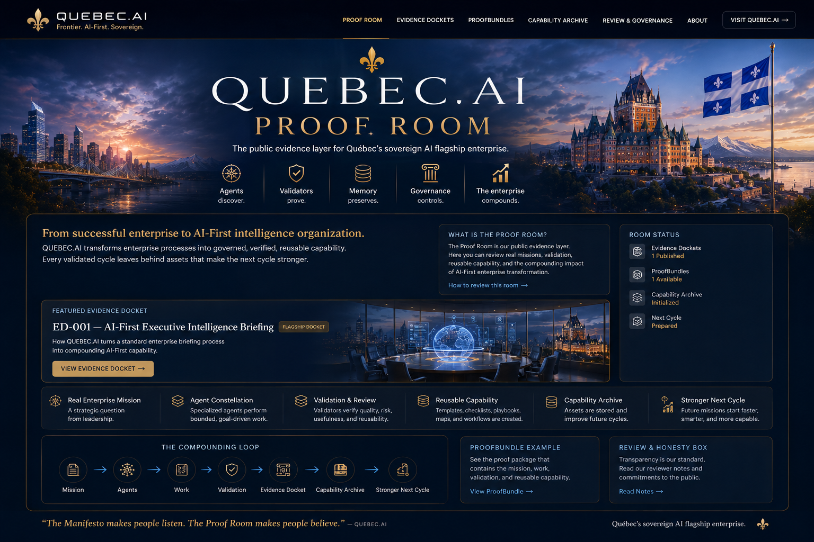

QUEBEC.AI Proof Room
The public evidence layer for Québec’s sovereign AI flagship enterprise.
From successful enterprise to AI‑First intelligence organization.
QUEBEC.AI takes a valuable enterprise process and turns it into a repeatable capability: mission → agents → work → validation → evidence → reusable assets → stronger next cycle.
ED‑001 — AI‑First Executive Intelligence Briefing
Shows how a standard executive briefing process becomes a reusable AI‑First capability: structured research, multi-agent work, validation, governance, and a capability archive that improves the next cycle.
View Evidence Docket →1. Real mission
A leadership question is converted into a bounded, reviewable work mission.
2. Agent constellation
Specialized agents research, synthesize, challenge, and prepare outputs.
3. Validation
Claims are checked for usefulness, risk, reusability, and decision quality.
4. Reusable capability
Templates, checklists, playbooks, and proof records become assets.
The compounding loop
Every validated cycle leaves behind memory, templates, reviewers’ notes, and capability packages. The next cycle starts faster, smarter, and more capable.
ProofBundle example
A public proof package showing the mission, work products, review notes, and reusable assets.
Open ProofBundle →Reviewer Honesty Box
The Proof Room is strongest when it says what was proven, what is still being tested, and what would make the claim stronger.
Read notes →